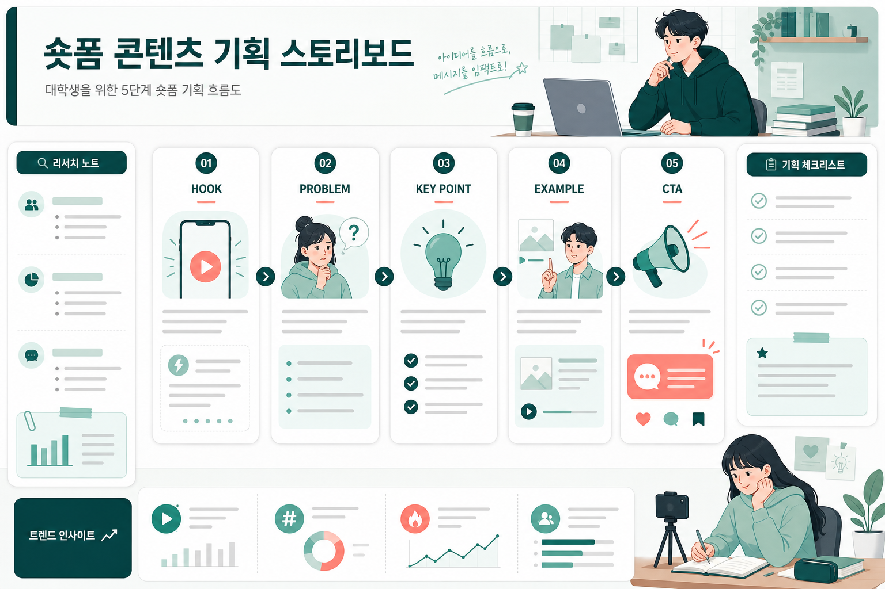
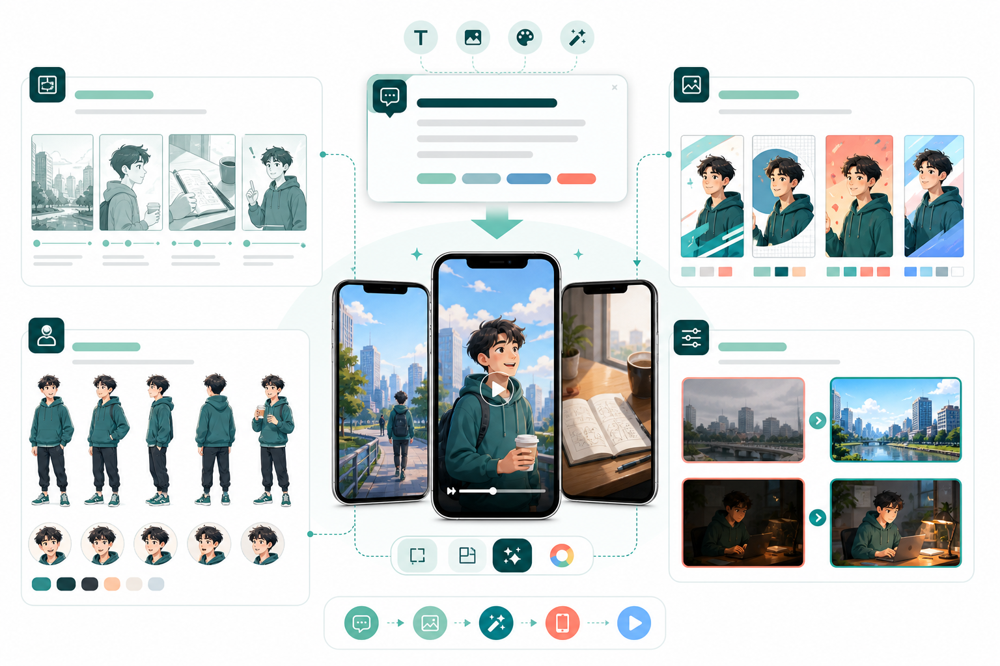
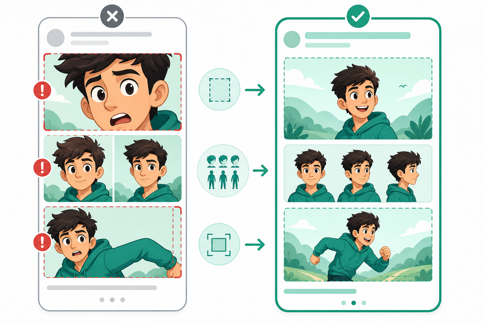
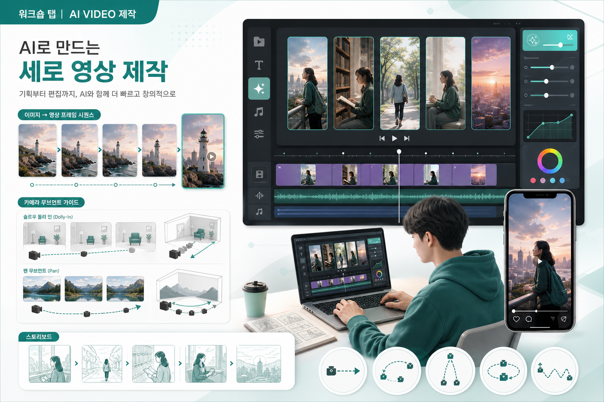
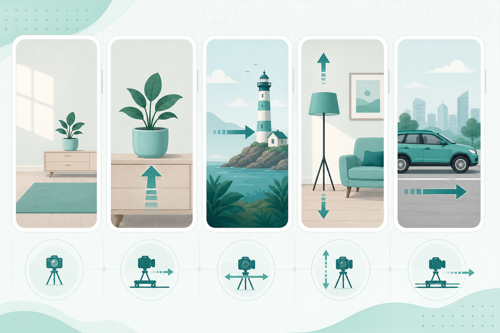
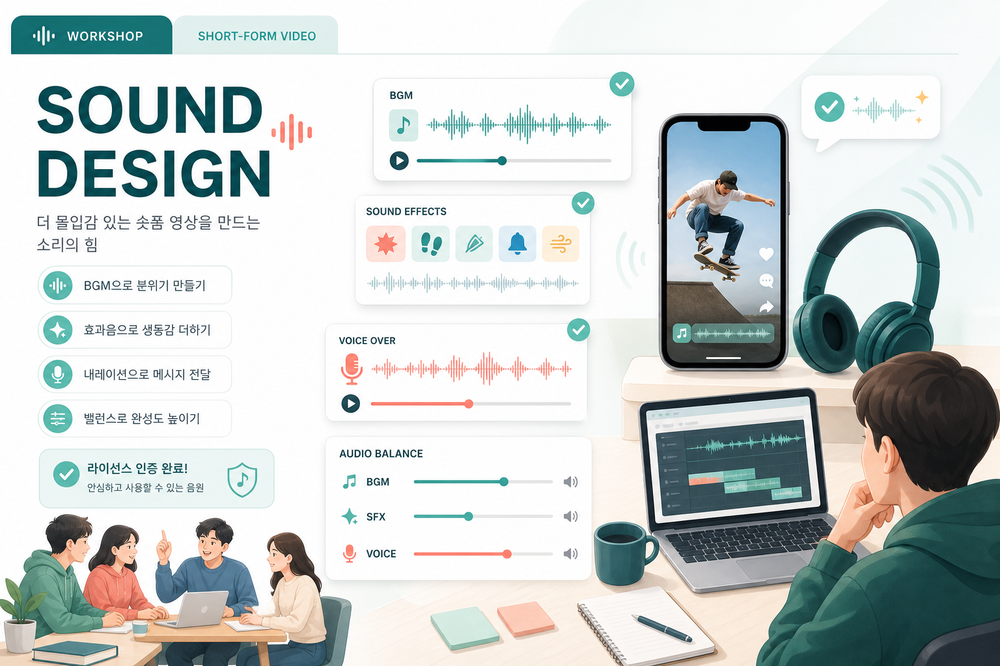
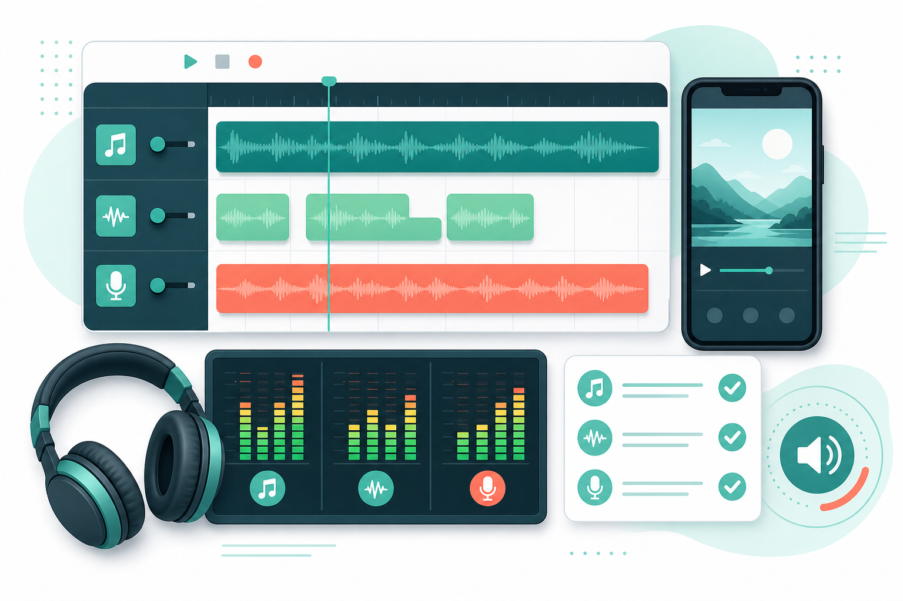
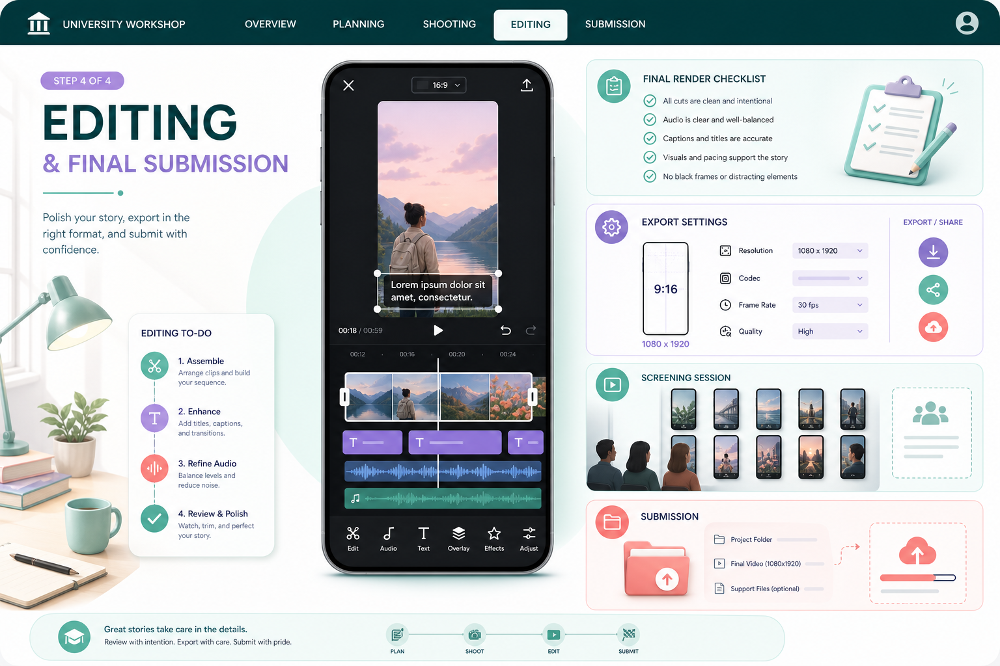
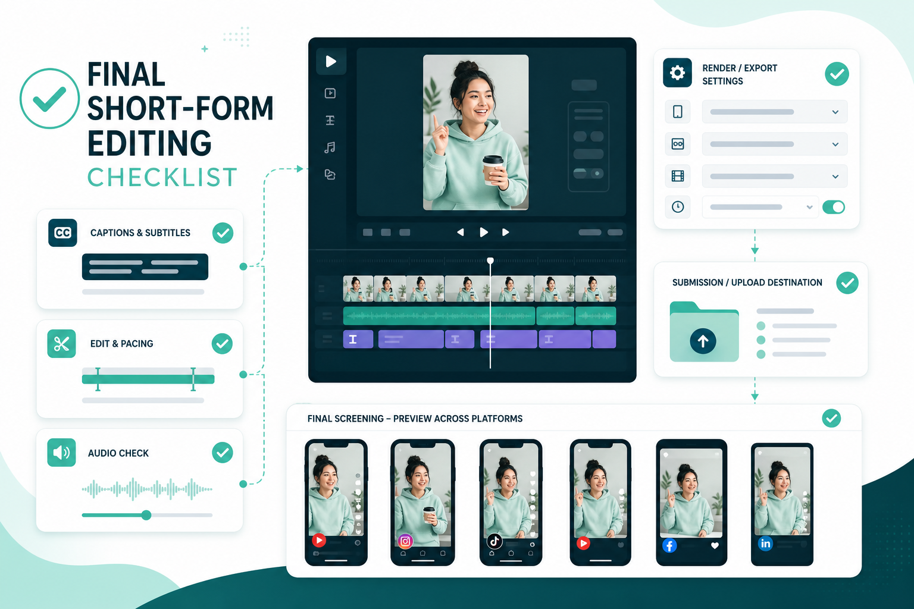

Planning
좋은 숏폼은 먼저 “누구에게 무엇을 왜 보여줄지”를 정하는 일에서 시작합니다
기획 단계의 목표는 멋진 아이디어를 많이 모으는 것이 아니라, 이미지·영상·자막으로 바로 옮길 수 있는 작은 메시지를 고정하는 것입니다. 주제는 좁게, 타깃은 구체적으로, 첫 장면은 강하게 잡습니다.

리서치에서 콘셉트로
- 주제 좁히기: “AI 활용법”보다 “대학생이 과제 주제를 빠르게 정리하는 AI 활용법”처럼 상황을 좁힙니다.
- 타깃 정의: 성별·연령보다 지금 겪는 문제, 원하는 감정, 저장하고 싶은 정보가 더 중요합니다.
- 레퍼런스 수집: 유사 숏폼의 첫 3초, 자막 톤, 컷 전환, 댓글 반응을 관찰합니다.
- 반복 패턴 추출: NotebookLM에 자료를 넣고 반복되는 키워드와 장면화 가능한 아이디어를 뽑습니다.
- 콘셉트 선택: GPT-5.5로 후보를 발산하고 Claude로 문장 톤과 구조를 정리합니다.
완성해야 할 기획 산출물
- 영상 주제 한 문장
- 타깃과 시청 상황
- 핵심 메시지 한 문장
- 첫 1~3초 Hook 후보 5개
- 30초, 45초, 60초 버전의 구조 비교
- 컷별 화면 내용, 자막/내레이션, 필요한 이미지, 필요한 움직임
- 제작 기록에 남길 리서치 출처와 선택 이유
기획 실습 흐름
숏폼은 짧은 설득 구조
숏폼을 “짧은 영상”으로만 보면 장면을 예쁘게 나열하게 됩니다. 먼저 시청자가 멈추고, 이해하고, 기억하고, 행동하는 순서를 설계해야 합니다.
- Hook: 첫 1~3초에 멈추게 하는 질문, 반전, 숫자, 결과 화면.
- Problem / Interest: 타깃이 겪는 상황을 빠르게 보여주는 공감 장면.
- Payoff: 정보, 해결, 변화, 비교, 감정적 보상.
- CTA: 저장, 공유, 참여, 제출, 다음 행동을 자연스럽게 유도.
넓은 주제를 제작 가능한 주제로 바꾸기
자료 수집에서 컷 구성까지
트렌드 키워드, 성공 사례 유형, 플랫폼별 표현 방식, 댓글 반응, 제출 기준을 모읍니다.
기사, 레퍼런스 요약, 공모전 안내, 개인 메모를 한곳에 넣고 반복되는 언어를 찾습니다.
핵심 메시지, Hook 후보, 시각화 가능한 요소, 이미지 제작용 장면 설명으로 바꿉니다.
컷 카드에 반드시 적을 항목
- 장면 목적: Hook, 공감, 설명, 변화, 결과, CTA 중 하나.
- 화면 내용: 인물, 장소, 행동, 소품, 표정.
- 자막 또는 내레이션: 편집 단계에서 넣을 짧은 문장.
- 이미지 요구사항: 구도, 여백, 조명, 스타일, 피해야 할 요소.
- 영상 움직임: 카메라 움직임과 피사체 움직임을 따로 기록.
기획 결과물 체크
- 핵심 메시지가 한 문장으로 말해집니다.
- Hook 후보가 5개 이상 있고, 가장 강한 후보를 고를 수 있습니다.
- 레퍼런스 영상은 첫 화면, 자막 톤, 컷 리듬, 댓글 반응으로 분석되어 있습니다.
- 이미지로 만들 컷과 영상으로 움직일 컷이 구분되어 있습니다.
- 장면 수가 과하지 않고 30~60초 안에 들어올 수 있습니다.
흔한 기획 실패와 교정
- 메시지가 여러 개: 영상 하나에는 주장 하나만 남깁니다.
- 첫 장면이 약함: 결과 화면, 질문, 반전, 숫자 중 하나로 시작합니다.
- 이미지 제작이 막힘: 장소, 인물, 행동, 소품을 구체화합니다.
- 스크립트가 길음: 30초 버전과 60초 버전을 나눠 문장을 압축합니다.
바로 쓰는 기획 프롬프트
나는 [타깃]을 대상으로 [주제]에 관한 30~60초 세로형 숏폼 영상을 만들려고 한다.
다음을 제작에 바로 쓸 수 있게 정리해줘.
1. 시청자가 첫 3초에 멈출 만한 Hook 후보 10개
2. 이 주제를 좁힐 수 있는 관점 5개
3. 30초 / 45초 / 60초 구성안 비교
4. 컷별 화면 내용, 자막, 필요한 이미지, 필요한 움직임
5. 이미지 생성과 영상 생성 단계에서 주의할 점
6. 제출용 제작 의도 초안
Image
이미지는 예쁜 그림이 아니라 시청자를 멈추게 하는 첫 장면이자 영상의 재료입니다
이미지 단계에서는 장면별 비주얼 자산을 만들고, 썸네일과 첫 화면을 강화하며, 전체 숏폼의 색감과 캐릭터 일관성을 맞춥니다. 텍스트가 필요한 컷과 시리즈 일관성이 필요한 컷은 서로 다른 전략으로 접근합니다.

첫 화면에서 멈추게 하는 컷. 인물 표정, 대비, 큰 형태, 여백이 중요합니다.
정보를 보여주는 컷. 복잡한 텍스트보다 명확한 상황, 오브젝트, UI 카드가 좋습니다.
분위기나 장면을 바꾸는 컷. 색감과 리듬을 이어주되 메시지를 흐리지 않습니다.
모델 선택 기준
- 텍스트·타이포·썸네일: 정확한 문구, 큰 제목, 포스터형 구성이 필요하면 GPT Image 2를 우선합니다.
- 캐릭터·배경 시리즈: 같은 인물, 같은 공간, 같은 조명을 유지해야 하면 Nano Banana 2를 우선합니다.
- 혼합 사용: 모델이 바뀌면 색감이 흔들릴 수 있으므로 공통 스타일 문장을 반복합니다.
- 자막 원칙: 이미지 안에 작은 글자를 억지로 넣기보다, 편집 단계에서 자막을 얹을 여백을 확보합니다.
프롬프트 구조
- 장면 목적: Hook, 설명, 비교, 감정, CTA 중 무엇인가?
- 화면 내용: 누가, 어디서, 무엇을 하고 있는가?
- 구도: 9:16 세로형, 인물 위치, 자막 여백, 시선 방향.
- 스타일: 실사, 일러스트, 제품 사진, 브이로그, UI 카드 등.
- 빛과 렌즈: 오전 자연광, 하이키 스튜디오, 35mm, macro, shallow depth.
- 제외 조건: 실제 로고, 왜곡된 손, 깨진 글자, 과한 배경 인물.

이미지 디버깅 체크
이미지 프롬프트 설계 공식
이미지 프롬프트는 “예쁘게”가 아니라 장면의 기능을 분해해 쓰는 방식이 안정적입니다. 결과가 실패했을 때 어느 항목을 고쳐야 하는지도 바로 보입니다.
누가 어디서 무엇을 하는지. 타깃과 상황이 드러나야 합니다.
rule of thirds, top-view, over-the-shoulder, 자막을 넣을 빈 공간.
soft natural light, high-key studio, smartphone vlog, magazine editorial, paper texture.
프롬프트 치트시트
- 장소: 캠퍼스, 강의실, 도서관, 카페, 지하철, 자취방, 편의점, 작업 책상.
- 상황: 어지러운 책상, 알림이 쌓인 스마트폰, 노트북 앞 고민, 체크리스트, 비교 화면.
- 구도: close-up, medium shot, wide shot, centered composition, split screen, top-view.
- 앵글: eye-level, low angle, high angle, POV, Dutch angle, over-the-shoulder.
- 렌즈: 24mm wide angle, 35mm street photo, 50mm portrait, macro, shallow depth of field.
시리즈 이미지 일관성
여러 컷이 서로 다른 광고처럼 보이지 않게 하려면 유지할 요소와 바꿀 요소를 분리해야 합니다. “같은 캐릭터”라고만 쓰지 말고 얼굴 인상, 헤어, 의상, 색감, 장소, 렌즈를 반복합니다.
- 기준 컷 1장을 먼저 확정하고 후속 컷을 변주합니다.
- 메인 배경 1개, 보조 배경 1개만 정합니다.
- 배경 소품은 3개 이하로 제한합니다.
- 행동은 컷마다 바꾸되 색감과 조명 문장은 고정합니다.
한글 타이포와 자막 분리
- 긴 문장은 이미지에 넣지 않고 편집 자막으로 처리합니다.
- 짧은 제목이나 숫자는 큰 글자로 제한해 시도합니다.
- 본문 설명은 반드시 편집 단계로 넘깁니다.
- 배경이 복잡하면 이미지에서는 자막 여백만 확보합니다.
- 글자가 깨지면 텍스트 없는 버전으로 재생성하고 CapCut에서 얹습니다.
이미지 결과 리뷰 질문
주제와 타깃이 화면에서 즉시 읽히는지 확인합니다.
상단, 하단, 좌측, 우측 중 어디에 자막을 둘지 정합니다.
피사체와 배경이 분리되고, 영상화할 움직임이 한 가지 이상 떠오르는지 봅니다.
얼굴, 의상, 색감, 조명, 배경이 앞뒤 컷과 이어지는지 봅니다.
로고, 워터마크, 유명 캐릭터, 깨진 글자, 손·얼굴 오류를 확인합니다.
새로 만들 컷과 편집으로 보완할 컷을 분리합니다.
바로 쓰는 이미지 프롬프트
세로형 9:16 숏폼 첫 화면용 이미지.
[타깃]이 [상황]에서 [감정/행동]을 보이는 장면.
인물은 화면 오른쪽 1/3에 배치하고, 왼쪽 상단 40%는 제목 자막을 넣을 수 있도록 깨끗하게 비워둔다.
밝은 자연광, 스마트폰 브이로그 느낌, 35mm street photo, 산뜻한 캠퍼스 분위기.
피해야 할 것: 실제 학교 로고, 브랜드명, 왜곡된 손, 읽기 어려운 글자, 과도한 배경 인물.
Video
영상 생성은 긴 클립을 한 번에 뽑는 것이 아니라 짧은 움직임을 안정적으로 설계하는 일입니다
영상 단계에서는 이미지 자산을 짧은 클립으로 바꾸고, 카메라 움직임과 피사체 움직임을 분리해 제어합니다. 한 모델 안에서 반복 생성하고, 좋은 컷을 고른 뒤 편집으로 연결하는 방식이 안정적입니다.

T2V와 I2V
- 텍스트-투-비디오: 추상 배경, 전환 컷, 분위기 컷, 새로운 장면 후보를 발산할 때 사용합니다.
- 이미지-투-비디오: 준비한 스토리보드 이미지의 인물·배경·색감을 유지하고 싶을 때 사용합니다.
- 선택 기준: 이미 만들어 둔 좋은 이미지가 있으면 I2V, 아직 장면이 모호하면 T2V로 후보를 만듭니다.
- 길이 기준: 5초 또는 10초 단위로 짧게 만들고, 편집에서 이어 붙이는 것이 안전합니다.
영상 프롬프트 5요소
- 주제와 장면: 무엇을 보여줄 것인가?
- 카메라 무빙: static, slow dolly in, pan, tilt, tracking 등.
- 피사체 모션: 인물의 시선, 표정, 손동작, 걸음, 제품 움직임.
- 조명과 분위기: 오전 자연광, 스튜디오, 골든아워, 차분한 톤.
- 제외 조건: 얼굴 변화, 손 변형, 과한 흔들림, 깨진 글자, 로고.

카메라 무빙 선택법
얼굴이 다른 사람처럼 바뀜, 손·몸이 심하게 깨짐, 의도와 반대 방향으로 움직임.
길이 어긋남, 앞뒤 여백, 약간 다른 색감, 불필요한 시작/끝 프레임.
의상, 배경, 조명, 카메라 방향, 움직임 속도가 앞뒤 컷과 맞아야 합니다.
영상 프롬프트 기본 공식
영상 프롬프트는 이미지 프롬프트에 모션과 카메라를 더한 것입니다. 한 컷에는 카메라 움직임 하나, 피사체 행동 하나만 넣어야 결과가 안정적입니다.
[주체/상황] + [행동/변화] + [카메라 무빙] + [샷 사이즈] + [앵글] + [렌즈/화각] + [조명/무드] + [duration] + [motion strength] + [negative prompt]wide shot은 공간, medium shot은 설명, close-up은 표정·제품·손동작에 적합합니다.
eye-level은 친근함, low angle은 자신감, top-down은 책상·제품·음식에 적합합니다.
24mm는 공간감, 35mm는 시네마틱 기본값, 50mm는 자연스러운 인물, macro는 디테일에 좋습니다.
모션 강도 선택
- low: 얼굴, 제품, 손, 원본 이미지 유지가 중요할 때.
- medium: 걷기, 시선 변화, 머리카락, 배경 움직임처럼 자연스러운 변화가 필요할 때.
- high: 댄스, 액션, 빠른 전환에 사용할 수 있지만 실패 가능성이 높으므로 짧게 테스트합니다.
첫 프레임과 마지막 프레임
- 좋은 이미지 1장을 첫 프레임으로 쓰면 인물·공간·색감을 유지하기 쉽습니다.
- 마지막 프레임을 추가하면 시선, 포즈, 구도 변화의 도착점을 지정할 수 있습니다.
- 같은 이미지에서 motion strength만 바꿔 비교하면 재생성 판단이 빨라집니다.
- 텍스트가 많은 이미지는 영상화하지 말고 편집 자막으로 분리합니다.
실패 클립 교정 워크플로
Negative prompt 기본 세트
Negative: distorted face, changed identity, extra fingers, deformed hands, warped body, flickering, jittery camera, text artifacts, logo artifacts, blurry details, sudden scene change, inconsistent outfit, inconsistent background, over-motion.
바로 쓰는 영상 프롬프트
Use the provided vertical image as the first frame.
A student slowly looks from the smartphone to the camera and smiles with a small surprised expression.
Camera: slow dolly in, stable, no handheld shake.
Lighting: soft morning natural light, bright campus mood.
Motion: gentle facial expression change, minimal hand movement, natural breathing.
Duration: 5 seconds, vertical 9:16.
Avoid: face identity change, distorted hands, unreadable text, sudden background change, excessive camera movement.
Sound
사운드는 분위기 장식이 아니라 시청 지속 시간과 메시지 전달을 조절하는 장치입니다
짧은 영상에서는 사운드가 조금만 과해도 자막과 메시지를 밀어냅니다. BGM, 효과음, 보이스, 무음의 역할을 나누고, 스마트폰 스피커 기준으로 다시 점검합니다.

사운드 레이어
- BGM: 영상의 속도와 감정 톤을 정합니다. 장면보다 빠르거나 느리면 편집 리듬이 어색해집니다.
- 효과음: 컷 전환, 클릭, 등장, 강조 순간을 살립니다. 모든 전환에 넣으면 산만합니다.
- 보이스: 설명 밀도를 조절합니다. 자막과 같은 말을 반복하기보다 핵심만 보강합니다.
- 무음: 반전, 멈춤, 집중이 필요한 순간에는 짧은 무음이 더 강한 강조가 됩니다.
출품 안정성
- 출처가 불명확한 음악은 제출용 영상에서 제외합니다.
- BGM과 효과음의 파일명, 출처, 사용 조건을 제작 기록에 남깁니다.
- 플랫폼 추천 음악은 외부 제출 규정과 충돌할 수 있으므로 사용 범위를 확인합니다.
- AI 보이스를 썼다면 생성 도구, 프롬프트, 사용 문장을 함께 기록합니다.

오디오 점검 순서
사운드 선택 기준
- 영상 주제와 감정이 맞는 음악을 고릅니다. 정보형 영상에 감성 BGM이 과하면 메시지가 흐려집니다.
- 편집 리듬과 BPM이 맞아야 컷 전환이 자연스럽습니다.
- 보이스가 있으면 BGM을 낮추고, 자막 중심 영상이면 사운드가 시선을 빼앗지 않게 합니다.
- Hook과 CTA에는 짧고 선명한 효과음을 사용할 수 있지만 모든 전환에 넣지는 않습니다.
오디오 레벨 우선순위
- 보이스: 설명과 신뢰감을 담당하므로 가장 먼저 들려야 합니다.
- 자막 이해: 소리가 자막 읽기를 방해하지 않아야 합니다.
- BGM: 감정과 속도를 받쳐주되 주인공이 되지 않습니다.
- 효과음: 강조 순간에만 짧게 들어가야 값싸 보이지 않습니다.
- 무음: 반전, 멈춤, 집중이 필요한 순간에는 소리를 빼는 것도 선택입니다.
사운드 트러블슈팅
BGM, 효과음, 보이스가 모두 크면 보이스를 기준으로 다시 낮춥니다.
첫 프레임, 첫 자막, 첫 효과음이 같은 방향으로 작동하는지 확인합니다.
fade in, fade out을 적용하고 컷 전환과 박자를 맞춥니다.
BGM을 줄이고 보이스가 있는 구간의 효과음을 과감히 제거합니다.
출처가 불명확한 음악은 빼고, 사용 도구와 음원 출처를 기록합니다.
노트북이 아니라 스마트폰 스피커 기준으로 최종 확인합니다.
바로 쓰는 사운드 프롬프트
30~45초 대학생 대상 세로형 숏폼 영상에 맞는 사운드 설계를 도와줘.
영상 톤은 [밝음/차분함/긴장감/감성적]이고, 첫 3초에는 [Hook 내용]이 나온다.
다음을 제안해줘.
1. 어울리는 BGM 분위기 5개
2. 효과음을 넣을 위치와 빼야 할 위치
3. 보이스와 자막이 겹치지 않게 하는 방법
4. 스마트폰 기준 최종 오디오 체크리스트
5. 출처와 라이선스를 기록해야 할 항목
Edit
편집은 생성 결과를 모으는 일이 아니라 제출 가능한 작품으로 수렴시키는 일입니다
편집 단계에서는 이미지, 영상, 자막, 사운드를 하나의 메시지로 묶습니다. 완벽한 클립을 계속 기다리기보다, 지금 가진 재료로 제출 가능한 버전을 만들고 필요한 컷만 교체합니다.

편집의 기본 구조
- Hook: 첫 화면과 첫 문장으로 멈추게 합니다.
- 전개: 문제, 정보, 변화, 결과를 너무 많은 컷으로 늘리지 않습니다.
- 리듬: 1.5~2초마다 변화가 있으면 좋지만, 메시지가 흐려지면 컷을 줄입니다.
- 클로징: 저장, 공유, 제출, 참여 같은 행동 또는 감정의 마무리를 남깁니다.
자막과 화면
- 자막은 이미지 생성 단계가 아니라 편집 단계에서 통제합니다.
- 한 줄은 짧게, 중요한 단어는 앞에 둡니다.
- 배경과 자막의 대비가 충분한지 스마트폰에서 확인합니다.
- 화면 안의 작은 글자와 편집 자막이 충돌하면 작은 글자를 버립니다.

마감 워크플로
세로형 mp4, 1080×1920, H.264, 소리가 포함된 최종본.
타깃, 메시지, 제작 의도, 왜 이 형식이 적합한지 한 문단으로 정리.
기획, 이미지, 영상, 사운드, 편집 단계별 도구와 주요 프롬프트 기록.
CapCut 편집 체크리스트
첫 3초에 Hook이 보이고, 같은 구도의 컷이 반복되지 않으며, 불필요한 앞뒤 여백을 잘랐는지 확인합니다.
안전 영역 안에 있고, 한 화면에 너무 많은 글자가 없으며, 배경과 대비가 충분해야 합니다.
BGM이 보이스나 메시지를 방해하지 않고, 효과음은 필요한 순간에만 들어가야 합니다.
9:16 세로형, 1080×1920, 30~60초, H.264, 제출 규칙에 맞는 파일명으로 렌더합니다.
재생성보다 편집이 빠른 경우
- 시작이나 끝 0.5초만 이상하면 트리밍합니다.
- 구도가 약하면 크롭, 줌인, 자막 박스로 보완합니다.
- 움직임이 부족하면 키프레임, 줌, 패닝을 사용합니다.
- 색감 차이는 필터, 밝기, 대비, 색온도로 맞춥니다.
- 설명이 부족하면 자막, 내레이션, 효과음으로 보강합니다.
반드시 다시 만들어야 하는 경우
- 얼굴이 완전히 다른 사람처럼 바뀐 경우.
- 손이나 몸 변형이 메시지보다 먼저 보이는 경우.
- 배경이 전혀 다른 장소로 바뀐 경우.
- 텍스트 아티팩트가 화면 중심에 크게 생긴 경우.
- 플리커와 흔들림이 계속 보여 자르기 어려운 경우.
제출 전 최종 점검
- 시청자가 첫 3초 안에 주제를 이해합니다.
- 영상 전체가 하나의 메시지로 이어집니다.
- 자막은 모바일 화면에서 읽히고 안전 영역 밖으로 나가지 않습니다.
- AI 오류가 메시지보다 먼저 보이지 않습니다.
- 음원, 이미지, 로고 사용에 문제가 없습니다.
- 최종 파일을 실제로 재생해보고 소리와 화면 비율을 확인했습니다.
- 작품 제목, 작품 설명, 제작 의도, AI 사용 도구, 프롬프트 기록이 함께 정리되어 있습니다.
바로 쓰는 자막 정리 프롬프트
아래 숏폼 스크립트를 모바일 자막용으로 줄여줘.
조건:
- 한 줄은 12~16자 안팎
- 첫 3초 Hook은 가장 강하게
- 어려운 말은 대학생이 바로 이해하는 표현으로
- 화면에 한 번에 너무 많은 문장이 뜨지 않게
- 마지막에는 저장/공유/제출/참여 중 하나의 행동으로 마무리
스크립트:
[여기에 원고 붙여넣기]